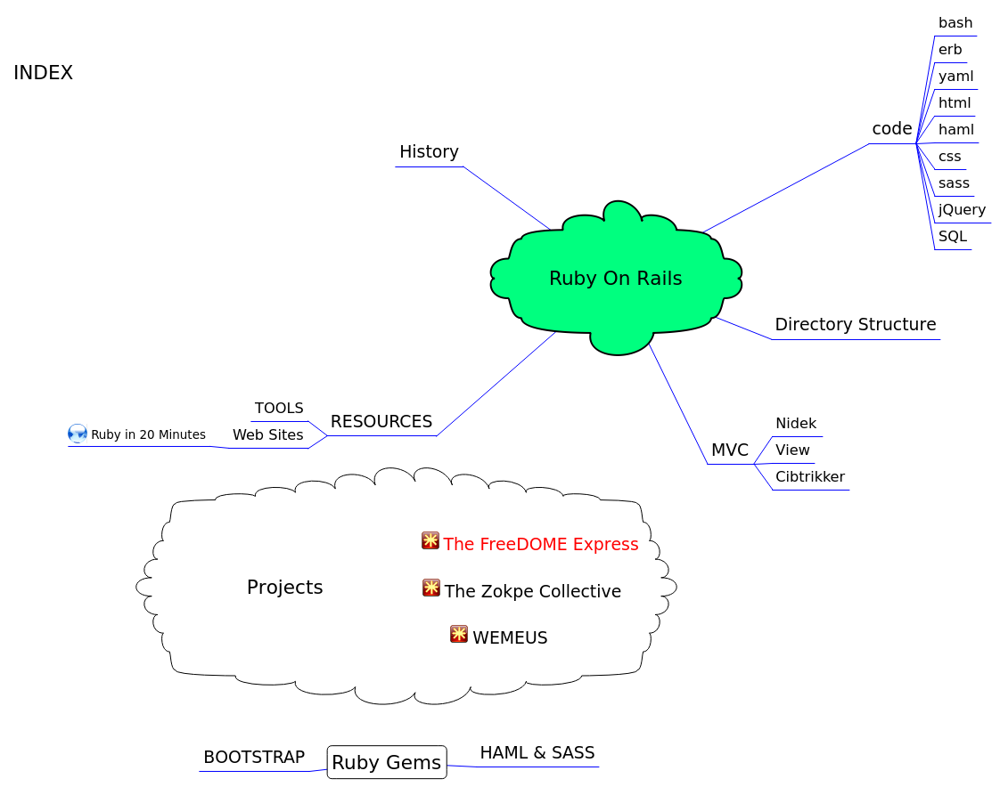

Contents:
INDEX
Ruby On Rails
1. History
2. Directory Structure
3. code
3.1. bash
3.2. erb
3.3. yaml
3.4. html
3.5. haml
3.6. css
3.7. sass
3.8. jQuery
3.9. SQL
4. MVC
4.1. Nidek
4.2. View
4.3. Cibtrikker
5. RESOURCES
5.1. TOOLS
5.2. Web Sites
5.2.1. Ruby in 20 Minutes
Ruby Gems
1. BOOTSTRAP
2. HAML & SASS
Projects
1. The FreeDOME Express
2. WEMEUS
3. The Zokpe Collective
INDEX
Ruby On Rails
History
Directory Structure
code
bash
erb
yaml
html
haml
css
sass
jQuery
SQL
MVC
Nidek
View
Cibtrikker
RESOURCES
TOOLS
Web Sites
Ruby in 20 Minutes
Ruby Gems
BOOTSTRAP
HAML & SASS
Projects
The FreeDOME Express
WEMEUS
The Zokpe Collective
/home/tingansob/Desktop/RUBY_NOTES/index/OnRails/RubyOnRails.html
2015-12-30
vym 2.3.20